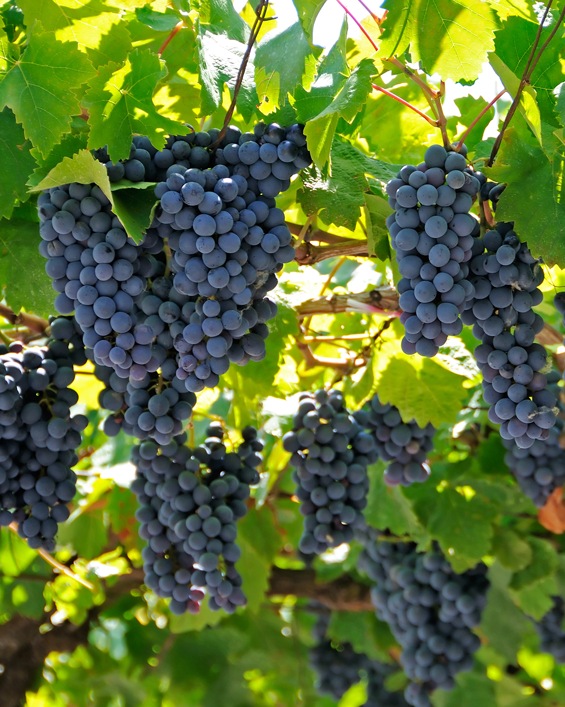

The first glass
Begin with Tikveš Classic Vranec. Tikveš is the name of both the wine district and the winery that makes this bottle. Vranec is the grape. Leave the back label unread for a moment. Once someone suggests black cherries, it becomes remarkably easy to smell them.
Pour a little, leaving room to swirl. Smell the wine once while it is still, then again after a turn of the glass. If something reminds you of plum, stay with that thought. Is it the tart smell of a plum cut open, or the richer smell of plums cooking down for jam? Both descriptions start with the same fruit and take you somewhere quite different. Use whichever comes closest to what you smell, even if all you can say today is “ripe.”
Now read the winery’s notes. Tikveš describes black cherry and damson, a small plum, alongside pronounced tannins and acidity. The last two are particularly easy to explore together. Take another sip and let it reach your gums. Tannin produces the friction you can also feel after drinking strong black tea. Acidity gets the saliva flowing. Your gums can feel dry at the very moment your mouth starts to water.
Pause before the next sip. Which impression lasts longest? Perhaps the plum comes back as you breathe out. Perhaps the fruit fades while the grip remains. Either observation tells you more about this particular glass than its deep color could.